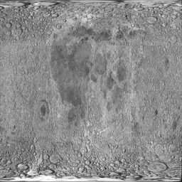
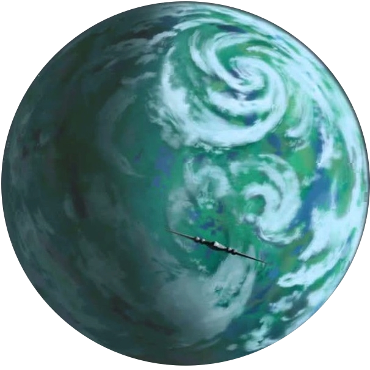
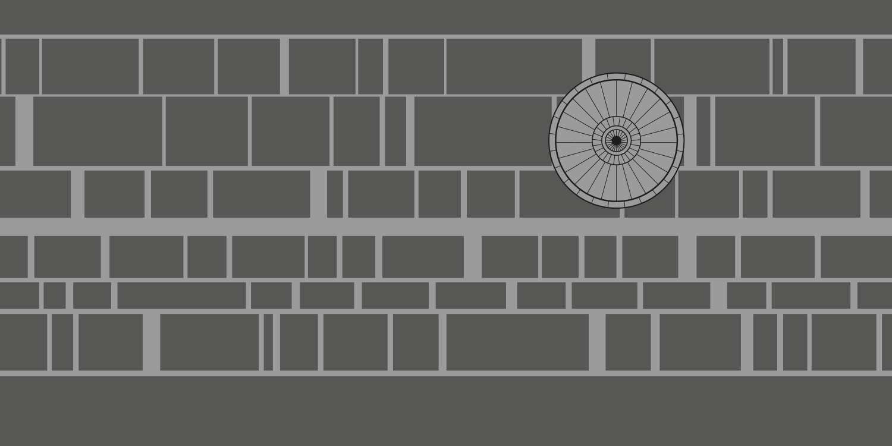
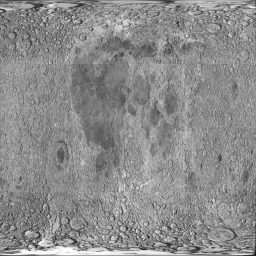
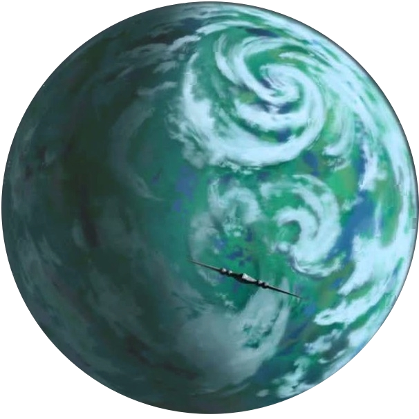
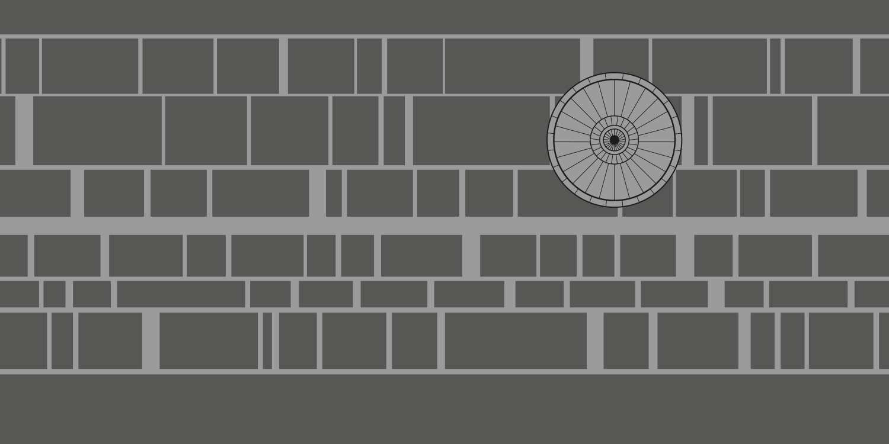
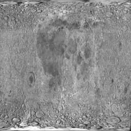
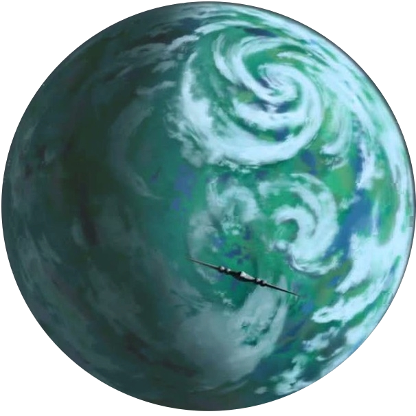
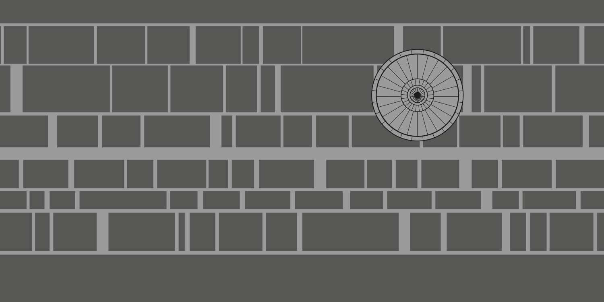

Make the Camera Level
Make Camera 60 degrees over plane
Increase speed
Decrease speed
Skip Forward 1 Hour
No Shading
Phong Shading
Textures + Phong Shading
Starwars
Oops ... your browser doesn't support the HTML5 canvas element
  
 




